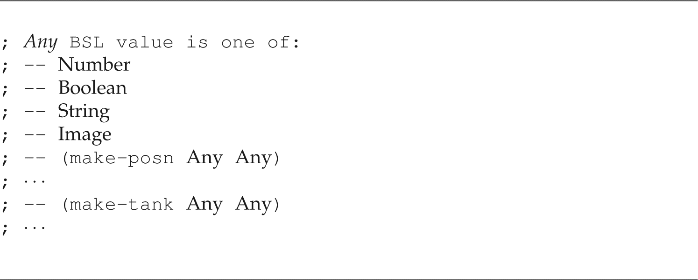

6.3 Input Errors
One central point of this chapter concerns the role of predicates. They are critical when you must design functions that process mixes of data. Such mixes come up naturally when your problem statement mentions many different kinds of information, but they also come up when you hand your functions and programs to others. After all, you know and respect your data definitions and function signatures. You never know, however, what your friends and colleagues do, and you especially don’t know how someone without knowledge of BSL and programming uses your programs. This section therefore presents one way of protecting programs from inappropriate inputs.
It is a form of self-delusion to expect that we always respect our own function signatures. Calling a function on the wrong kind of data happens to the best of us. While many languages are like BSL and expect programmers to check signatures on their own, others do so automatically at the cost of some additional complexity.
Let’s demonstrate this point with a simple program, a function for computing the area of a disk:
; Number -> Number
; computes the area of a disk with radius r
(define (area-of-disk r)
(* 3.14 (* r r)))
Our friends may wish to use this function for their geometry homework. Unfortunately, when our friends use this function, they may accidentally apply it to a string rather than a number. When that happens, the function stops the program execution with a mysterious error message:
> (area-of-disk "my-disk")
*:expects a number as 1st argument, given "my-disk"
With predicates, you can prevent this kind of cryptic error message and signal an informative error of your own choice.
Specifically, we can define checked versions of our functions, when we wish to hand them to our friends. Because our friends may not know much BSL, we must expect that they apply this checked function to arbitrary BSL values: numbers, strings, images, Posns, and so on. Although we cannot anticipate which structure types will be defined in BSL, we know the rough shape of the data definition for the collection of all BSL values. Figure 38 displays this shape of this data definition. As discussed in chapter 5.7, the data definition for Any is open-ended because every structure type definition adds new instances. These instances may contain Any values again, which implies that the data definition of Any must refer to itself—a scary thought at first.

Figure 38: The universe of BSL data
Based on this itemization, the template for a checked function has the following rough shape:
; Any -> ???
(define (checked-f v)
(cond
[(number? v) …]
[(boolean? v) …]
[(string? v) …]
[(image? v) …]
[(posn? v) (…(posn-x v) … (posn-y v) …)]
…
; which selectors are needed in the next clause?
[(tank? v) …]
…))
Of course, nobody can list all clauses of this definition; fortunately, that’s not necessary. What we do know is that for all those values in the class of values for which the original function is defined, the checked version must produce the same results; for all others, it must signal an error.
Concretely, our sample function checked-area-of-disk consumes an arbitrary BSL value and uses area-of-disk to compute the area of a disk if the input is a number. It must stop with an error message otherwise; in BSL we use the function error to accomplish this. The error function consumes a string and stops the program:
(error "area-of-disk: number expected")
Hence the rough definition of checked-area-of-disk looks like this:
(define MESSAGE "area-of-disk: number expected")
(define (checked-area-of-disk v)
(cond
[(number? v) (area-of-disk v)]
[(boolean? v) (error MESSAGE)]
[(string? v) (error MESSAGE)]
[(image? v) (error MESSAGE)]
[(posn? v) (error MESSAGE)]
…
[(tank? v) (error MESSAGE)]
…))
The use of else helps us finish this definition in the natural way:
; Any -> Number
; computes the area of a disk with radius v,
; if v is a number
(define (checked-area-of-disk v)
(cond
[(number? v) (area-of-disk v)]
[else (error "area-of-disk: number expected")]))
And just to make sure we get what we want, let’s experiment:
> (checked-area-of-disk "my-disk")
area-of-disk:number expected
Writing checked functions is important if we distribute our programs for others to use. Designing programs that work properly, however, is far more important. This book focuses on the design process for proper program design, and, to do this without distraction, we agree that we always adhere to data definitions and signatures. At least, we almost always do so, and on rare occasions we may ask you to design checked versions of a function or a program.
Exercise 110. A checked version of area-of-disk can also enforce that the arguments to the function are positive numbers, not just arbitrary numbers. Modify checked-area-of-disk in this way. 
Exercise 111. Take a look at these definitions:
(define-struct vec [x y])
; A vec is
; (make-vec PositiveNumber PositiveNumber)
; interpretation represents a velocity vector
Develop the function checked-make-vec, which is to be understood as a checked version of the primitive operation make-vec. It ensures that the arguments to make-vec are positive numbers. In other words, checked-make-vec enforces our informal data definition.
Predicates You might wonder how you can design your own predicates. After all, checked functions really seem to have this general shape:
; Any -> …
; checks that a is a proper input for function g
(define (checked-g a)
(cond
[(XYZ? a) (g a)]
[else (error "g: bad input")]))
where g itself is defined like this:
; XYZ -> …
(define (g some-x) …)
We assume that there is a data definition labeled XYZ, and that (XYZ? a) produces #true when a is an element of XYZ and #false otherwise.
For area-of-disk, which consumes Numbers, number? is clearly the appropriate predicate. In contrast, for some functions like missile-render from above, we clearly need to define our own predicate because MissileOrNot is a made-up, not a built-in, data collection. So let us design a predicate for MissileOrNot.
We recall the signature for predicates:
; Any -> Boolean
; is a an element of the MissileOrNot collection
(define (missile-or-not? a) #false)
It is a good practice to use questions as purpose statements for predicates, because applying a predicate is like asking a question about a value. The question mark “?” at the end of the name also reinforces this idea; some people may tack on “huh” to pronounce the name of such functions.
Making up examples is also straightforward:
(check-expect (missile-or-not? #false) #true)
(check-expect (missile-or-not? (make-posn 9 2)) #true)
(check-expect (missile-or-not? "yellow") #false)
The first two examples recall that every element of MissileOrNot is either #false or some Posn. The third test says that strings aren’t elements of the collection. Here are three more tests:
(check-expect (missile-or-not? #true) #false)
(check-expect (missile-or-not? 10) #false)
(check-expect (missile-or-not? empty-image) #false)
Explain the expected answers!
Since predicates consume all possible BSL values, their templates are just like the templates for checked-f. Stop! Find the template and take a second look before you read on.
As with checked functions, a predicate doesn’t need all possible cond lines. Only those that might produce #true are required:
(define (missile-or-not? v)
(cond
[(boolean? v) …]
[(posn? v) (… (posn-x v) … (posn-y v) …)]
[else #false]))
All other cases are summarized via an else line that produces #false.
Given the template, the definition of missile-or-not? is a simple matter of thinking through each case:
(define (missile-or-not? v)
(cond
[(boolean? v) (boolean=? #false v)]
[(posn? v) #true]
[else #false]))
Only #false is a legitimate MissileOrNot; #true isn’t. We express this idea with (boolean=? #false v), but (false? v) would also do:
(define (missile-or-not? v)
(cond
[(false? v) #true]
[(posn? v) #true]
[else #false]))
Naturally all elements of Posn are also members of MissileOrNot, which explains the #true in the second line.
Exercise 112. Reformulate the predicate now using an or expression.
Exercise 113. Design predicates for the following data definitions from the preceding section: SIGS, Coordinate (VAnimal.
To wrap up, let us mention key-event? and mouse-event? as two important predicates that you may wish to use in your world programs. They check the expected property, but you should check out their documentation to make sure you understand what they compute.